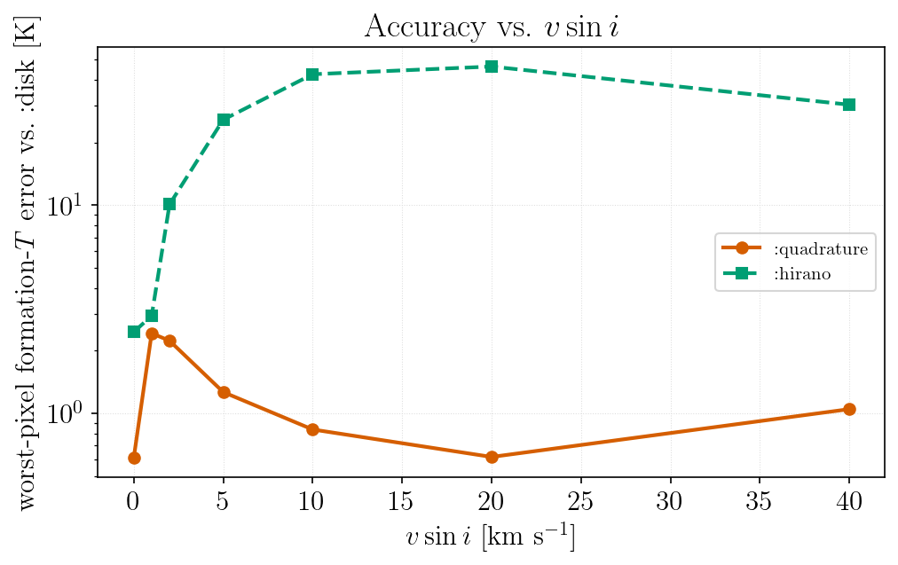
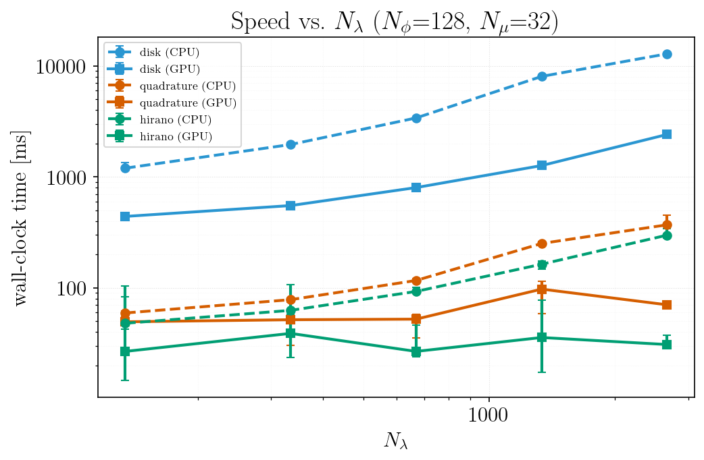

Integration Methods
calc_formation_temp can integrate over the stellar disk in three ways, selected with the method keyword:
method | description | accuracy | speed |
|---|---|---|---|
:disk (default) | explicit disk integration over Nϕ latitude bins; self-consistent limb darkening | reference | slowest |
:quadrature | Gauss–Legendre μ-quadrature; reproduces the :disk physics | ~1 K of :disk | fast (CPU & GPU) |
:hirano | analytic rotation + macroturbulence convolution (needs u1, u2) | approximate | fastest |
calc_formation_temp(star, linelist; method=:disk) # reference
calc_formation_temp(star, linelist; method=:quadrature) # fast, near-reference
calc_formation_temp(star, linelist; method=:hirano, u1=0.43, u2=0.31) # fastest, approximateAll three run on the GPU with use_gpu=true.
convolve=false maps to method=:disk and convolve=true to method=:hirano. New code should use method.
Choosing a method
:diskis the default and the reference. Use it for the definitive answer, or at very lowvsini, where:quadrature's pixel-grid Doppler kernel is least accurate (worst-pixel ~2 K nearvsini ≈ 2 km/s; mean ≪ 0.1 K). That low-vsinifloor comes from representing a only-a-few-pixels-wide Doppler kernel on the wavelength grid; it does not improve withNμ.:quadratureis the one to reach for when:diskis too slow: it reproduces the:diskresult — including inclination and differential rotation (set viaStellarProps) — to within ~1 K, while running roughly 5–10× faster on CPU and up to ~100× on GPU. Use Float64; atgpu_precision=Float32it is noticeably less accurate. The reformulation itself is exact rather than approximate: radiative transfer is wavelength-local, so a Doppler shift of the input opacity shifts the emergent intensity identically, and rotation can therefore be applied as a per-ring convolution after the transfer solve. That is what lets RT be solved once per μ node instead of once per surface tile. What remains is the pixel-grid discretization of the ring kernel.:hiranois fastest but assumes a parametric limb-darkening law, so its error grows withvsini— a physical model difference, not a numerical one:

Wall-clock time for each method (CPU and GPU) as a function of the wavelength-grid size:

Rotation is set by vsini (the projected equatorial velocity), istar, and the differential-rotation coefficients α₂, α₄ — see StellarProps. :hirano supports rigid rotation only.
For rigid rotation istar has no physical effect (the projected velocity field carries no inclination dependence); it matters only once α₂/α₄ are nonzero, because inclination then selects which latitude bands — rotating at different rates — are visible. See StellarProps for the one numerical caveat at finite Nϕ.
Accuracy notes
Nμis the most effective accuracy knob for slow rotators, and defaults to 32. Cost scales linearly with it. Halving it to 16 costs roughly an order of magnitude in worst-pixel agreement withmethod=:disk; doubling it to 64 buys comparatively little.test_quadrature.jlasserts this convergence.Formation temperatures in strong saturated cores are lower limits. Where the flux contribution is still peaking at the top of the MARCS grid,
form_tempsis set by where the model was truncated rather than by the line's actual formation depth.result.ceiling_ratioquantifies this per wavelength andboundary_maskflags the affected wavelengths; a warning reports the count. Exclude them before interpreting a formation-temperature spectrum:result = calc_formation_temp(star, linelist) good = .!boundary_mask(result) # or boundary_mask(result; r_thresh=…)Note that Balmer lines are not the usual cause. Their lower level (n=2) sits ~10.2 eV up, so its population — and hence the line opacity — is negligible in the cool upper photosphere and rises steeply with depth. In LTE on a MARCS grid, Hα is a shallow feature forming well inside the model rather than at its ceiling; the deep chromospheric core seen in the real Sun is outside what a photospheric model can produce.
Convolution padding is sized from the kernel support. The rotational, macroturbulent and microturbulent kernels are applied as padded linear convolutions; the padding is derived from
vsini,ζandξtogether withΔλ, so a fast rotator on a finely sampled grid does not silently wrap. If the ring Doppler kernel is wider than the synthesis window itself,:quadraturewarns that the broadening is truncated — widen the window withminλ/maxλ.